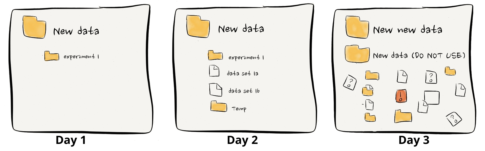

Data organisation with NeuroBlueprint#
The challenge of unstandardised data in systems neuroscience
estimated reading time: 10 minutes

The increasing use of software to automate acquisition and analysis pipelines should be revolutionising how researchers collaborate. It should now be commonplace to quickly and conveniently plug newly acquired data into community pipelines for common preprocessing and analysis steps.
Unfortunately this is typically not the case, with researchers often re-coding pipelines from scratch and in isolation.
The lack of data standardisation in systems neuroscience is a major obstacle to realising the benefits of automation. Have you ever borrowed a colleagues’ analysis script, only to spend the next few hours changing the code structure to fit your data? Lack of data standardisation wastes time, prohibits effective collaboration and at worst leads to mistakes in analysis and reporting.
To address these problems, the Neuroinformatics Unit have developed an easy-to-use data standardisation framework, NeuroBlueprint. This blog motivates the need for data standardisation and provides an introduction to NeuroBlueprint, highlighting its place within the current data standardisation landscape.
In a companion post, we introduce datashuttle, a tool to automate the implementation of NeuroBlueprint.
Why should you care about standardisation?#
Making sense of someone else’s data can often feel like navigating a maze. The initial excitement for
analysing a fresh dataset can quickly turn into confusion and frustration. Questions about inconsistent naming
conventions (“Is subject1 the same as Subject01?”), unclear labels (“Why are some sessions marked as EXCLUDED?”),
and unfamiliar file formats may trigger weeks of back-and-forth emails and sap all enthusiasm.
This issue doesn’t just concern collaborations with external partners; it’s prevalent within research teams too. It’s common to find colleagues puzzled by each other’s filing systems or a group leader scrambling to locate a crucial graph for an upcoming presentation. The main issue isn’t that one person’s system is superior to another’s; rather, it’s their differences that lead to confusion.
In general, good data management is hard. Trying to get everyone on the same page takes time and effort away from the big-picture goals, especially in the non-stop world of research. Scientists tend to be diligent folks and usually kick off a project with a neat system for keeping their data in order. But as the project picks up speed, deadlines get tighter, and without a clear plan to stick to, that neat system begins to fray at the edges. Before you know it, things get messy, things gets misplaced, and what was once clear is now a fog.
{kind=link}
credit: ErrantScience
However, the payoff for good data management is huge, not just for teamwork but also for your future self who’s racing to submit a paper. The headaches and time lost to disorganised data aren’t just frustrating; they can undermine the integrity and reproducibility of your work.
Data specifications as a solution#
Data specifications tackle the aforementioned challenges by establishing explicit rules for the naming and organisation of files and folders. Specifications, or specs for short, simplify the process for researchers and enhance collaboration through standardised data organisation practices across projects.
In other words, specs serve as a way for people (and machines) to agree on using the same data organisation scheme.
Key elements of an effective data spec include:
Documentation: Specs should be thoroughly documented and accessible to all relevant parties involved in data handling.
Clarity: The guidelines within the spec need to be precise, minimising any chance for confusion.
Adoption: Rather than creating a bespoke system, it’s preferable to use a widely recognised spec already in use by your group, department, institute, or research field.
Let’s look at two concrete specifications that have been most successful in neuroscience— Brain Imaging Data Structure (BIDS) and NeuroData Without Borders (NWB)—and explore the role of NeuroBlueprint within the current data specification landscape.
Standardisation landscape: BIDS and NWB#
BIDS is a data specification widely used in the field of human neuroimaging, with extensions to systems neuroscience ongoing. Developed through the collaborative efforts of hundreds of researchers, BIDS is known for its intuitive design and comprehensive guidelines. It offers explicit rules for folder and file naming, file formats, and metadata, and is supported by a broad ecosystem of software tools and data repositories.
NWB takes a different approach. Rather than focusing on how folders and files are organized, NWB provides a unified, open-access file format able to combine raw and analysed data, and its metadata, in one file. This approach is particularly valuable in neuroscience, where diverse and often proprietary file formats pose a significant hurdle to data sharing.
BIDS and NWB represent the gold-standard of data standardisation—a fully specified dataset stored in an open-access file format. Though full standardisation should always be the end goal for a published dataset, conforming to full BIDS or NWB during acquisition and analysis—when many of the benefits of standardisation are realised—can be prohibitively difficult.
For example, BIDS has a level of detail that can be intimidating to new users and difficult to maintain during hectic acquisition schedules. Consolidating all data into a single file with NWB might not always be practical during the data exploration phase where flexibility is crucial.
NeuroBlueprint aims to bridge the gap between ‘no standardisation’ and ‘full standardisation’ with a lightweight specification that is easy to get started with. This opens the doors to many of the benefits of standardisation without putting an undue burden on researchers busy with demanding data acquisition schedules.
The NeuroBlueprint specification#
NeuroBlueprint has been developed as an easy-to-use specification with a low barrier for entry.
Acutely aware of proliferating yet another standard, NeuroBlueprint aims to couple as tightly as possible to BIDS, allowing it to act as a stepping stone to more comprehensive data-organisation schemes.
NeuroBlueprint specifies that data should be organised in a particular folder structure, with nested subject, session and datatype (e.g. electrophysiology, behaviour) levels. The naming of these folders should adhere to a certain style, as exemplified below:


While the full specification is available to read here, we provide a brief summary of its main features:
A top-level distinction splitting raw data (“rawdata”) and data derived from processing the raw data (“derivatives”)
Hierarchical subject-session-datatype organisation
Subject and session folder names are formatted as key-value pairs (only “sub-” and “ses-” required)
Datatype folders with fixed names (e.g. “ephys”)
No hard specification on filenames, but recommended structure provided
Limitations#
Currently, NeuroBlueprint is not designed for multi-animal or group experiments where sessions may include interactions between multiple subjects.
Metadata requirements (e.g. how to store sync pulses) are not currently specified, but recommendations for these are in development.
Getting Started#
Getting started with NeuroBlueprint is as easy as reading the specification, and organising your experimental folders according to the standard. It’s recommended to get started by using NeuroBlueprint with your next experiment, rather than trying to re-organise existing folders and analysis code, which is always tricky.
We are very keen for feedback on the NeuroBlueprint specification and happy to make adjustments where required. Please don’t hesitate to get in contact with us on our Zulip chat or raise a GitHub Issue.